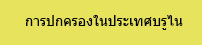

|  |
|---|
บทบาทของประเทศบรูไนกับอาเซียน
ประเทศบรูไน มีชื่อเป็นทางการว่า "เนการาบรูไนดารุสซาลาม" มีเมือง "บันดาร์เสรีเบกาวัน" เป็นเมืองหลวง ถือเป็นประเทศที่มีขนาดไม่ใหญ่นัก เพราะมีพื้นที่ประมาณ 5,765 ตารางกิโลเมตร ปกครองด้วยระบบสมบูรณาญาสิทธิราช โดยมีพระมหากษัตริย์เป็นประมุข มีประชากร 381,371 คน (ข้อมูลปี พ.ศ.2550) โดยประชากรเกือบ 70% นับถือศาสนาอิสลาม
ข้อมูลทั่วไปของประเทศบรูไน
ประเทศบรูไน หรือชื่อทางการว่า “รัฐบรูไนดารุสซาลาม” (State of Brunei Darussalam) หรือในภาษามาเลย์ว่า เนการาบรูไนดารุสซาลาม ในอดีตเคยเป็นรัฐในอารักขาของอังกฤษเมื่อปี พ.ศ.2431 ภายหลังได้รับเอกราชอย่างสมบูรณ์ในปี พ.ศ.2527 ประเทศบรูไนตั้งอยู่บนเกาะบอร์เนียว ชายฝั่งทางด้านเหนือจดทะเลจีนใต้ พรมแดนทางบกที่เหลือถูกล้อมรอบด้วยรัฐซาราวัคประเทศมาเลเซีย มีพื้นที่ราว 5,765 ตารางกิโลเมตร มีประชากรกว่า 408,146 คน (สำรวจปี 2553) ส่วนใหญ่นับถือศาสนาอิสลาม (67%) ศาสนาพุทธ (13%) ศาสนาคริสต์ (10%) และศาสนาฮินดู ภาษาทางการ คือ มาเลย์ บรูไนถือเป็นประเทศที่มีจำนวนประชากรน้อยมาก ขณะเดียวกันก็เป็นประเทศที่มีค่าครองชีพสูงมากแห่งหนึ่งของโลก..... ปัจจุบัน ประเทศบรูไนปกครองในระบอบสมบูรณาญาสิทธิราชย์ มีสุลต่านเป็นประมุข และดำรงตำแหน่งนายกรัฐมนตรีและรัฐมนตรีว่าการกระทรวงกลาโหม แบ่งการปกครองเป็น 4 เขต มีเมืองหลักคือ เมืองบันดาร์ เสรี เบกาวัน (เมืองหลวง) เมืองท่ามูอารา และเซรีอา
พระมหากษัตริย์ และนายกรัฐมนตรี: สมเด็จพระราชาธิบดีฮัจญี ฮัสซานัล โบลเกียห์ มูอิซซัดดิน วัดเดาละห์ ประเทศบรูไน ปกครองด้วยระบอบสมบูรณาญาสิทธิราชย์ กำหนดให้สุลต่านทรงเป็นอธิปัตย์ คือเป็นทั้งประมุข นายกรัฐมนตรี และรัฐมนตรีว่าการกระทรวงกลาโหม โดยรัชกาลปัจจุบัน คือ สมเด็จพระราชาธิบดีฮัจญี ฮัสซานัล โบลเกียห์ มูอิซซัดดิน วัดเดาละห์ ทรงเป็นพระราชาธิบดีพระองค์ที่ 28 แห่งบรูไน มีพระชนมายุ 66 พรรษา เสด็จขึ้นครองราชย์เมื่อวันที่ 5 ตุลาคม พ.ศ. 2510 ดำรงพระอิสริยยศเป็นพระประมุขแห่งรัฐ นายกรัฐมนตรี รัฐมนตรีว่าการกระทรวงกลาโหม รัฐมนตรีว่าการกระทรวงการคลัง และผู้นำทางศาสนาอิสลามแห่งเนการาบรูไนดารุสซาลาม
ด้านเศรษฐกิจของประเทศบรูไน
ในด้านเศรษฐกิจบรูไนเป็นประเทศผู้ส่งออกน้ำมันเป็นสินค้าหลักแต่เนื่องจากการคาดการณ์เกี่ยวกับปริมาณน้ำมันสำรองของบรูไนที่จะหมดลงในราวปี 2558 จึงทำให้บรูไนหันมาให้ความสนใจกับทรัพยากรธรรมชาติอื่นๆ เช่น ป่าไม้ แร่ธาตุ สัตว์น้ำ และพื้นที่ทางการเกษตร เพื่อเร่งรัดการพัฒนารูปแบบของการลงทุน โดยเฉพาะอุตสาหกรรมที่สัมพันธ์กับภาคเกษตร ป่าไม้ และการประมง เพื่อทดแทนอุตสาหกรรมน้ำมัน สกุลเงินของประเทศบรูไน คือ ดอลลาร์บรูไน
การเข้าเป็นสมาชิกของอาเซียน
ประเทศบรูไน ดารุสสลาม ได้เข้าเป็นสมาชิกลำดับที่ 6 เมื่อวันที่ 7 มกราคม พ.ศ.2527 การเข้าเป็นสมาชิกอาเซียนของประเทศบรูไนนั้น มีปัจจัยที่สนับสนุนอาจแยกได้เป็น 2 ประการ คือ
1) ด้านความมั่นคงและเศรษฐกิจ แม้บรูไนจะเป็นประเทศที่มีความมั่งคั่งทางเศรษฐกิจ แต่เมื่อพิจารณาในแง่การพัฒนาโครงสร้างทางเศรษฐกิจ อาจกล่าวได้ว่าการที่บรูไนเข้าร่วมในสมาคมอาเซียนจะยังประโยชน์ให้แก่บรูไนเป็นอย่างมาก เพราะประเทศสมาชิกอาเซียนอื่นๆ มีความพร้อมในเรื่องเศรษฐกิจสูงกว่าบรูไน สำหรับในด้านการเมืองและความมั่งคงนั้น บรูไนมีความมั่นใจในระดับหนึ่งว่า หลักการเกี่ยวกับการไม่แทรกแซงกิจการภายใน (non-interference) ของอาเซียน จะเป็นเครื่องค้ำประกันเสถียรภาพของบรูไนจากการแทรกแซงของประเทศเพื่อนบ้านอย่างมาเลเซียและอินโดนีเซียได้
2) ด้านสถานภาพในเวทีการเมืองระหว่างประเทศ ถือเป็นการยกฐานะของประเทศในความสัมพันธ์ระหว่างประเทศ ด้วยเหตุที่บรูไนเป็นรัฐขนาดเล็กและเพิ่งได้รับเอกราชใหม่ จึงมีความจำเป็นที่จะต้องเสริมสร้างสถานภาพและความเชื่อถือขึ้นในเวทีการเมืองระหว่างประเทศ และการเข้าร่วมกับอาเซียนนั้นก็น่าจะเป็นหนทางหนึ่งที่จะเพิ่มบทบาทและชื่อเสียงของบรูไนให้เป็นที่รู้จักกันในวงการเมืองระหว่างประทศได้อย่างกว้างขวา
จุดแข็ง
– การเมืองค่อนข้างมั่นคง– รายได้เฉลี่ยต่อคนเป็นอันดับ 2 ในอาเซียน อันดับ 26 ของโลก
– ผู้ส่งออกและมีปริมาณสำรองน้ำมันอันดับ 4 ในอาเซียน
ข้อควรรู้
– ประชาชนของประเทศในกลุ่มอาเซียนสามารถทำวีซ่าที่ ตม.ที่ประเทศบรูไนฯ สามารถอยู่ได้นาน 2 สัปดาห์– ควรหลีกเลี่ยงเสื้อผ้าสีเหลือง เพราะถือเป็นสีของพระมหากษัตริย์
– การทักทายจะจับมือกันเบาๆ และสตรีจะไม่ยื่นมือให้บุรุษจับ
– การใช้นิ้วชี้ไปที่คนหรือสิ่งของถือว่าไม่สุภาพ แต่จะใช้หัวแม่มือชี้แทน
– จะไม่ใช้มือซ้ายในการส่งของให้ผู้อื่น
– สตรีเวลานั่งจะไม่ให้เท้าชี้ไปทางผู้ชายและไม่ส่งเสียงหรือหัวเราะดัง
– วันหยุดคือวันศุกร์และวันอาทิตย์, วันศุกร์ 12.00-14.00 น.ทุกร้านจะปิด
– จัดงานเย็นต้องจัดหลัง 2 ทุ่ม